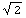
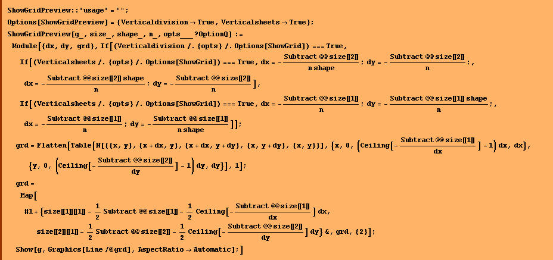
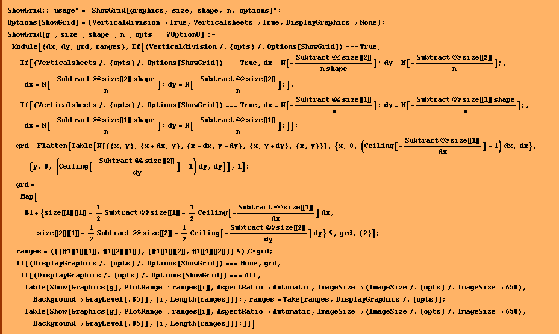
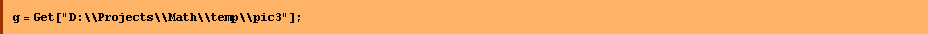
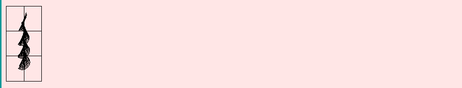
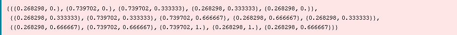
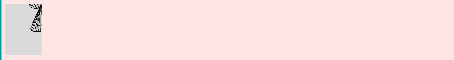
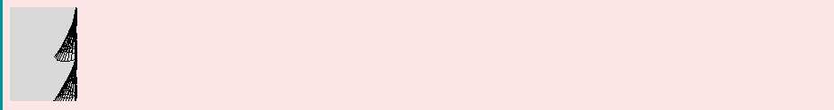
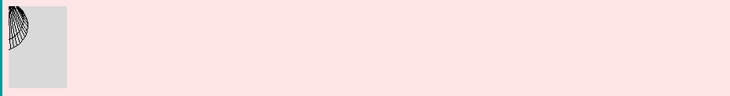
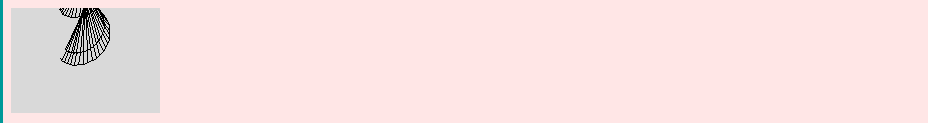

![[Graphics:Images/index_gr_12.gif]](Images/index_gr_12.gif)
| HOME | PERSONAL | PROJECTS | LINKS |
There are two ways to improve resolution of the printed images: to buy a better printer (or plotter) or to cut the picture in multiple pages.
What we need is a function that shows several graphics from the
input one.
The first matter is: how can I choose the number and the orientation of
the sheets?
To have an idea of the cut to be made, the function
"ShowGridPreview[]" prints out the graphics covered by a grid.
The grid parameters are "shape, n, Verticaldivision, Verticalsheets".
Shape stands for the ratio of the paper dimensions.
The width of the graphics is divided in n parts if the parameter
verticaldivision is set to True, otherwise the lenght is patitioned in n
parts.
If the parameter Verticalsheets is True, the boxes of the grid are like
a "shape" box, otherwise they are "1/shape" box.
Then the grid is centered on the graphics.
The option DisplayGraphics can assume the values:
None:in this case no graphics are displayed and
the routine gives a list of ranges, each range can be passed to the Show
option PlotRange.
All: in this case all the graphics are diplayed,
n: the number n specifies that only the first n
graphics are displayed,
-n: specifies that only the last n graphics are
displayed,
{m, n}: specifies that only the graphics
between n and m are displayed.
When the option DisplayGraphics is different from All or None, it's
value is passed to a Take function witch selects the graphics.
The most commnon printers uses A4 sheets.
In this case the parameter "shape" will be equal to

, infact the size of the sheets is 210 x 297 mm. Unfortunely the size of the graphics is unknow.
The only way I've found to know the graphic's size is to Show it, to
select it and to use the menu command "Input -> Get Graphics
Coordinate".
Once you get the minimum and the maximimum value of the width and
lenght of the graphic, put this number in a list of list like this:
{{minx, maxx}, {miny, maxy}}, then assign this list to the parameter
"shape".
Fortunely the predefinited function Show accepts the option
ImageSize which specifies the absolute size of an image to render.
ImageSize->x specifies that the image should have a width of x
printer's points, so the final step to do is to send the output of the
function ShowGrid[] to the printer.









| HOME | PERSONAL | PROJECTS | LINKS |